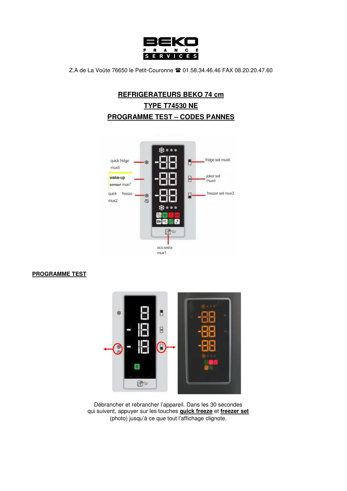
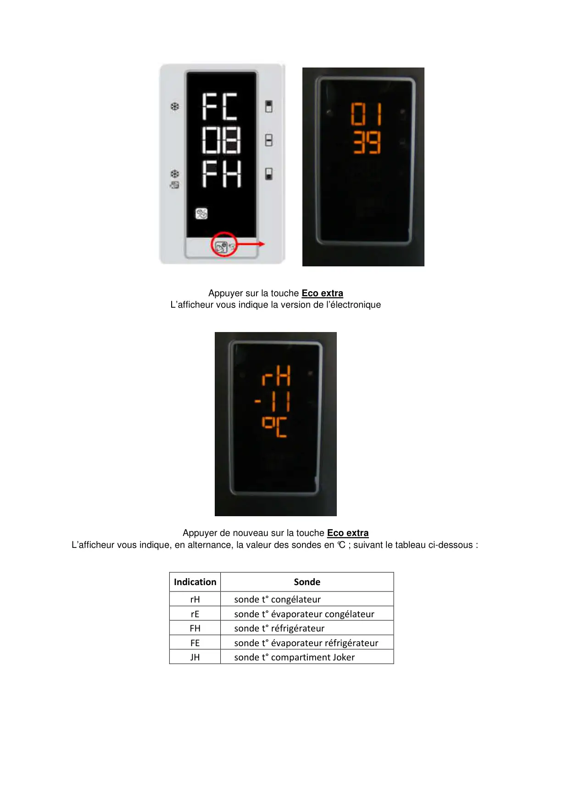
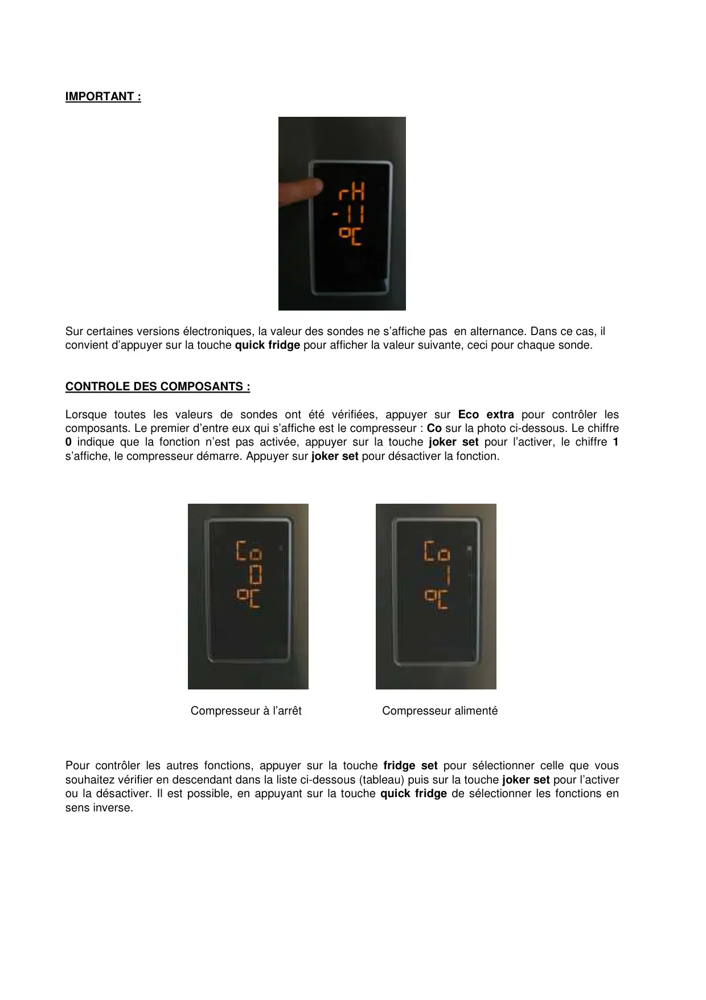
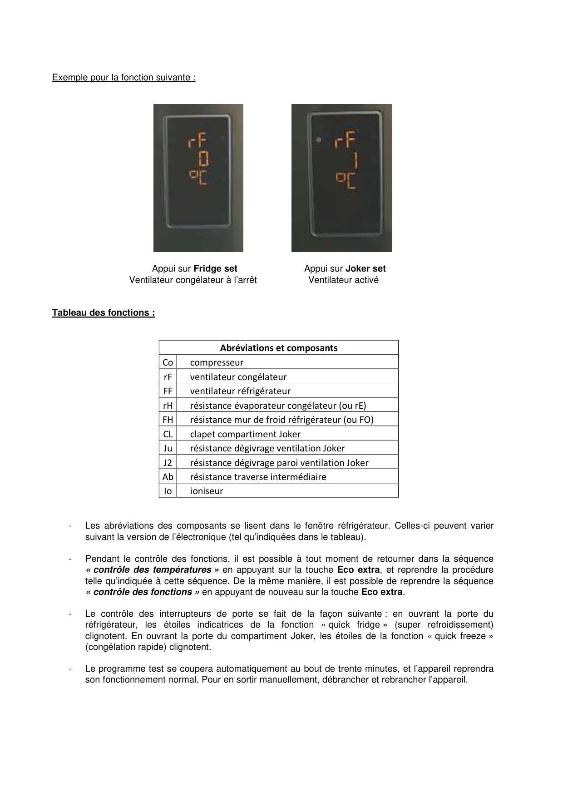
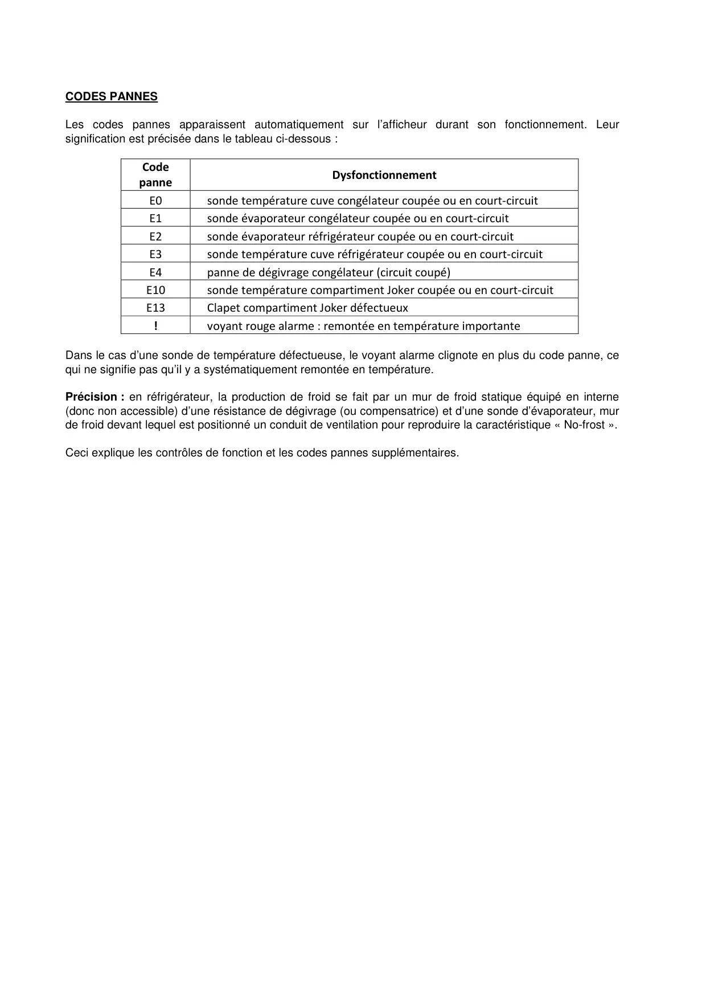

ProgrTest T74530NE CN151920DX Fr

Z.A de La Voûte 76650 le Petit-Couronne 01.58.34.46.46 FAX 08.20.20.47.60REFRIGERATEURS BEKO 74 cmTYPE T74530 NEPROGRAMME TEST – CODES PANNESPROGRAMME TESTDébrancher et rebrancher l’appareil. Dans les 30 secondesqui suivent, appuyer sur les touches quick freeze et freezer set(photo) jusqu’à ce que tout l’affichage clignote.
1 / 5
Appuyer sur la touche Eco extraL’afficheur vous indique la version de l’électroniqueAppuyer de nouveau sur la touche Eco extraL’afficheur vous indique, en alternance, la valeur des sondes en °C ; suivant le tableau ci-dessous :IndicationSonderHsonde t° congélateurrEsonde t° évaporateur congélateurFHsonde t° réfrigérateurFEsonde t° évaporateur réfrigérateurJHsonde t° compartiment Joker
2 / 5
IMPORTANT :Sur certaines versions électroniques, la valeur des sondes ne s’affiche pas en alternance. Dans ce cas, ilconvient d’appuyer sur la touche quick fridge pour afficher la valeur suivante, ceci pour chaque sonde.CONTROLE DES COMPOSANTS :Lorsque toutes les valeurs de sondes ont été vérifiées, appuyer sur Eco extra pour contrôler lescomposants. Le premier d’entre eux qui s’affiche est le compresseur : Co sur la photo ci-dessous. Le chiffre0 indique que la fonction n’est pas activée, appuyer sur la touche joker set pour l’activer, le chiffre 1s’affiche, le compresseur démarre. Appuyer sur joker set pour désactiver la fonction.Compresseur à l’arrêt Compresseur alimentéPour contrôler les autres fonctions, appuyer sur la touche fridge set pour sélectionner celle que voussouhaitez vérifier en descendant dans la liste ci-dessous (tableau) puis sur la touche joker set pour l’activerou la désactiver. Il est possible, en appuyant sur la touche quick fridge de sélectionner les fonctions ensens inverse.
3 / 5
Exemple pour la fonction suivante :Appui sur Fridge set Appui sur Joker setVentilateur congélateur à l’arrêt Ventilateur activéTableau des fonctions :Abréviations et composantsCocompresseurrFventilateur congélateurFFventilateur réfrigérateurrHrésistance évaporateur congélateur (ou rE)FHrésistance mur de froid réfrigérateur (ou FO)CLclapet compartiment JokerJurésistance dégivrage ventilation JokerJ2résistance dégivrage paroi ventilation JokerAbrésistance traverse intermédiaireIoioniseur-Les abréviations des composants se lisent dans le fenêtre réfrigérateur. Celles-ci peuvent variersuivant la version de l’électronique (tel qu’indiquées dans le tableau).-Pendant le contrôle des fonctions, il est possible à tout moment de retourner dans la séquence« contrôle des températures » en appuyant sur la touche Eco extra, et reprendre la procéduretelle qu’indiquée à cette séquence. De la même manière, il est possible de reprendre la séquence« contrôle des fonctions » en appuyant de nouveau sur la touche Eco extra.-Le contrôle des interrupteurs de porte se fait de la façon suivante : en ouvrant la porte duréfrigérateur, les étoiles indicatrices de la fonction « quick fridge » (super refroidissement)clignotent. En ouvrant la porte du compartiment Joker, les étoiles de la fonction « quick freeze »(congélation rapide) clignotent.-Le programme test se coupera automatiquement au bout de trente minutes, et l’appareil reprendrason fonctionnement normal. Pour en sortir manuellement, débrancher et rebrancher l’appareil.
4 / 5
CODES PANNESLes codes pannes apparaissent automatiquement sur l’afficheur durant son fonctionnement. Leursignification est précisée dans le tableau ci-dessous :CodepanneDysfonctionnementE0sonde température cuve congélateur coupée ou en court-circuitE1sonde évaporateur congélateur coupée ou en court-circuitE2sonde évaporateur réfrigérateur coupée ou en court-circuitE3sonde température cuve réfrigérateur coupée ou en court-circuitE4panne de dégivrage congélateur (circuit coupé)E10sonde température compartiment Joker coupée ou en court-circuitE13Clapet compartiment Joker défectueux!voyant rouge alarme : remontée en température importanteDans le cas d’une sonde de température défectueuse, le voyant alarme clignote en plus du code panne, cequi ne signifie pas qu’il y a systématiquement remontée en température.Précision : en réfrigérateur, la production de froid se fait par un mur de froid statique équipé en interne(donc non accessible) d’une résistance de dégivrage (ou compensatrice) et d’une sonde d’évaporateur, murde froid devant lequel est positionné un conduit de ventilation pour reproduire la caractéristique « No-frost ».Ceci explique les contrôles de fonction et les codes pannes supplémentaires.
5 / 5